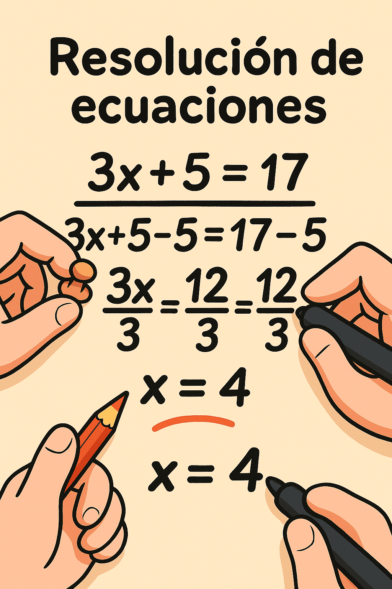
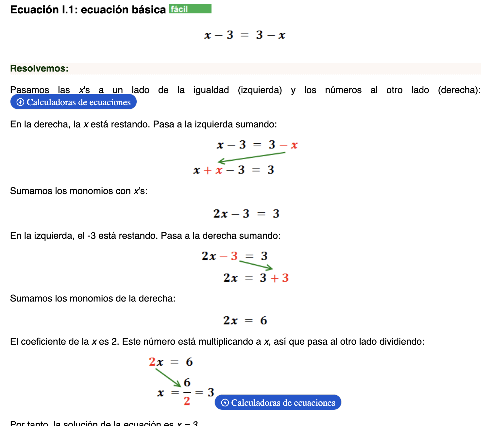

Resolución de ecuaciones
Resolución de ecuaciones
Concepto
Unaecuaciónes una igualdad en la queaparecen n煤meros y letras, que se llamanincógnitas, relacionados mediante operaciones matemáticas. Son una herramienta valiosa en matemáticas y en muchas áreas de la vida cotidiana. En el colegio nos ense帽an algunas delas ecuaciones más importantes para la historia de la cienciaque se aplican en f铆sica y matemáticas.
Con frecuencia nos enfrentamos a situaciones que podemos representar escribiendo una ecuación. Los problemas de ecuaciones de primer grado sirven para representar situaciones en las que hay una cantidad desconocida que está relacionada con otras cantidades conocidas mediante una operación matemática. Al resolver una ecuación de primer grado se puede encontrar el valor de una cantidad desconocida.

Ejemplo

Por tanto, la solución de la ecuación esx = 3
Actividades
Instrucciones para los estudiantes:
- Lee bien el problema.
- Subraya los datos importantes
- Identifica qu茅 operación debes hacer primero, luego cuál es la siguiente.
- Resuelve paso a paso.
- Tu respuesta final con claridad
Actividad 1
En esta actividad debes de apoyarte para que realices este ejemplo, donde tu deberas arrastrar y soltar. Exitos.
6m - 5= m + 20
Actividad 2
Esta actividad consiste en arrastrar la respuesta correcta hacia donde corresponde, teniendo en cuenta el ejemplo anterior mente planteado
x+5 =3x+1.
Creative Commons: Reconocimiento - compartir igual 4.0